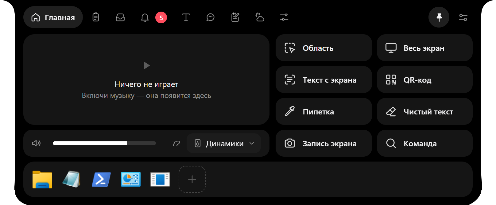

Всё лучшее.
В одном острове.
Islet — динамический остров для Windows. Я собрал лучшие идеи в одно приложение, доработал их и выкладываю бесплатно. Для всех.
- вкладок в капсуле
- 9
- быстрых действий
- 8
- стоит
- 0 ₽
- лицензия
- MIT
Сжимается. Раскрывается. Подстраивается.
Заиграла музыка, пошла загрузка, пришло сообщение: остров показывает главное и снова становится капсулой. Наведи на экран, и он замрёт.
Один остров. Три страницы о нём.
Возможности
Девять вкладок по порядку: музыка, буфер, полка, уведомления, текст, чат с ИИ, заметки, погода, управление. И загрузки с настоящим процентом.

Глазки
Моргают, следят за курсором и меняют настроение. Поиграй с ними прямо на сайте.
Скачать
Установщик на 140 МБ, три шага и ответы на частые вопросы.
Бесплатно.Открыто.С доработками.
Я соединил всё самое лучшее и выкладываю это для всех абсолютно бесплатно. И с нашими доработками.
Без подписок, без пробного периода, без рекламы. Весь код открыт: можно посмотреть, как всё устроено, собрать самому или предложить свою доработку.